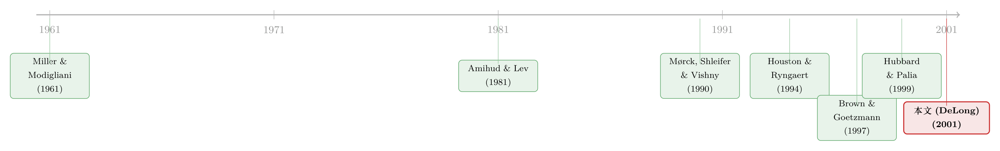

把并购拆成两个维度：什么样的银行合并，才真的创造价值？
本文读的是 DeLong (2001, Journal of Financial Economics)：把银行并购同时按「地理」和「业务」两个维度拆成聚焦 (focus) 或多元化 (diversification)，结果发现——只有「地理 + 业务」双双聚焦的那一类合并，在公告日为股东创造了约 +3.0% 的价值，其余三类都不创造价值；而且，多元化合并里出价方的损失，并不是把钱让给了目标方，而是真真切切的价值毁灭。
1 一个被「平均」藏起来的问题
先从一个让人有点泄气的事实说起。
美国银行业从 1980 年代中期开始就在不停地合并。Mishkin (1998) 甚至预言，再过二十年，银行的数量会不到现在的一半。可奇怪的是，并购浪潮一波接一波，学界翻来覆去地做事件研究，却始终找不到清楚的证据，说银行合并在公告日对股东是「值钱」的。好几篇综述（Palia, 1995；Rhoades, 1994）反复得到同一个结论：把出价方 (bidder) 和目标方 (target) 的收益按权重加总，平均下来几乎是零。
于是一个自然的问题浮上来了：难道所有的银行并购，都是一桩不赚不赔的买卖吗？
DeLong 的怀疑很朴素——「平均为零」很可能是个假象。也许有一类合并实实在在地创造了价值，另一类则在毁灭价值，两者一加一减，在样本均值里互相抵消，于是看上去什么都没发生。真正该问的，不是「银行并购值不值钱」，而是「能不能把值钱的那一类，从不值钱的那一类里识别出来」。
要识别，就得先有一把分类的尺子。这篇论文的全部精彩，几乎都凝结在这把尺子上。
2 两个维度，四个格子
DeLong 的做法是把每一桩合并放进一个 2×2 的格子里，两条轴分别是「地理」和「业务」：
- 地理 (geography)：出价方和目标方总部在同一个州，叫「市场内 (in-market)」，是地理聚焦；在不同州，叫「市场延伸 (market-extending)」，是地理多元化。
- 业务 (activity)：两家做的是不是同一类生意。
于是有了四个组（论文一直用这套缩写，记住它后面读起来会顺很多）：
- GFAF：地理、业务双双聚焦（Geography Focus, Activity Focus）；
- GDAF：地理多元化、业务聚焦；
- GDAD：地理、业务双双多元化；
- GFAD：地理聚焦、业务多元化。
地理这条轴好办，看总部在哪个州就行。难的是业务这条轴。 两家银行做的生意「像不像」，远没有「在不在同一个州」那么一目了然。如果只按两位数 SIC 码 (Standard Industrial Classification) 来分，几乎所有银行都落进 SIC 60 这个大筐里，根本分不开；就算细到四位数（6021 国民商业银行、6022 联储成员州立银行、6023 受保州立银行……），也只是个粗糙的标签，捕捉不到「这家在做按揭、那家在炒政府债」这种真正的业务差异。
这里就是这篇论文真正关键的一步。
3 关键的一步：让股价收益替你「认」出业务相似度
DeLong 没有去翻业务分类的标签，而是直接去看两家公司的股价怎么动。
她的直觉是这样的：一家银行做什么生意，它就承担什么样的风险；而它承担什么风险，市场就会在它的股价里要求什么样的溢价。Sweeney 和 Warga (1986) 早就发现，投资者会对利率风险事先索取一个溢价，而且溢价大小与风险敞口成正比；Flannery 和 James (1984) 在银行样本里得到了一样的结论。把这个逻辑顺下去——一家专做按揭的银行，利率风险敞口比一家重仓政府债的银行大，市场对它要求的溢价就高，于是两者的股价会以不一样的节奏波动。 反过来，如果两家银行的股价收益高度同步，那它们很可能在做相似的生意、承担相似的风险。
所以，股价收益序列就成了一把现成的、连「对冲」这种隐蔽活动都能照出来的业务相似度尺子。
具体怎么量？她借用了 Brown 和 Goetzmann (1997) 给共同基金分「风格」的思路。Brown-Goetzmann 发现，与其用一堆事先设定的因子载荷去硬套基金，不如直接看基金月度收益的相似度，让基金「自然地」落进不同的风格组里——这样还能容纳基金经理那些动态调仓的策略。DeLong 把同一招搬到银行身上：对每家公司，取合并公告前一个完整日历年（12 月到 12 月）的月度股票收益，构成一个向量，然后做聚类分析 (cluster analysis)。落进同一簇的两家公司，业务聚焦；落进不同簇的，业务多元化。
用的是 Ward 法 (Ward's method)。它的思想可以一句话讲透：把每个观测先各自当成一簇，然后一步步合并，每次都合并那两个使「簇内变异 (within-group variation)」相对「簇间变异 (between-group variation)」上升得最少的簇。这里的「距离」用的是观测到簇心 (centroid) 的平方欧氏距离 (squared Euclidean distance)：
$$ d^2(x,\bar{x}) = \sum_{t} \left( x_{t} - \bar{x}_{t} \right)^2 $$
其中 \(x\) 是某家公司的月度收益向量，\(\bar{x}\) 是簇心（簇内向量的平均）。簇内变异越小，说明簇里的公司收益越「像」。这个合并过程理论上可以一直走到只剩一个无所不包的大簇——但那毫无用处（大簇解释的总变异为零，而每个单点构成的簇解释 100%）。所以要中途叫停：DeLong 在聚类解释了约 40%–50% 的总变异时停手。
为了不让「地理」污染「业务」，她还做了一道干净的预处理：先按州把样本切成地理聚焦组和地理多元化组，再在每个组内、逐年单独做聚类。 8 个年份 × 2 类地理 = 16 个子集，每个子集各自聚类，簇数从 1988 年地理聚焦组的 3 簇到 1995 年地理多元化组的 6 簇不等。逐年分开还有一个附带的好处——自动剔除了收益向均值漂移 (drift) 的干扰。
这套方法到底靠不靠谱？论文给了几个「肉眼可验证」的旁证，挺有说服力的：以闻名的「聚焦型」银行控股公司 First Bank System 为例，它发起的 5 桩合并里有 4 桩被归为业务聚焦；而以「多元化」著称的 Norwest（同样在明尼阿波利斯），8 桩里有 7 桩被归为业务多元化。储贷机构（S&L）会自动落进同一簇，区域性银行落进另一簇，两家货币中心银行（BankAmerica 和 Citibank）又单独成簇。方法确实「认」出了它该认出的东西。
4 数据与设计
把方法讲清楚之后，剩下的就是规规矩矩的事件研究了。
样本来自 Securities Data Company，是 1988–1995 年间宣布、且 1996 年 6 月前完成的美国境内并购，要求出价方和目标方都是上市公司、且至少一方是银行。「并购」的定义是一方取得另一方超过 50% 的投票权（并导致目标方股票退市）。两家的股价数据都得能从 CRSP 取到，且公告前至少有一年的数据用于业务分类。
层层筛下来：Securities Data 列出的 729 桩里，最终能用的只有 280 桩。剔除的大头是涉及非美国伙伴的（203 桩，因为跨境的公司控制权市场和披露要求不同，会污染结果）、至少一方不在 CRSP 里的（111 桩）、以及公告前不足一年数据的（135 桩）。
「双方都得是上市公司」这条限制，把样本砍得很厉害——这也是为什么 Palia (1993) 那类研究改用「出价 / 目标账面净值」的并购溢价法，好把没上市的目标方也纳进来。两条路各有代价：溢价法能看更多目标方，事件研究法则能直接读出股东财富的市场评价。
描述性统计里有个数字后面会反复出现：GFAF（双聚焦）那一组的目标 / 出价方相对规模中位数高达 18%，而其余三组都不到 8%。 记住这个差异，它在结果里要派上大用场。还有一个时代背景——样本期里地理多元化的合并从 1988 年的 7 桩涨到 1995 年的 34 桩，正是因为限制跨州扩张的麦克法登法案 (McFadden Act) 正在被 Riegle-Neal 州际银行法逐步取代，不少州在 1990 年代初就提前放松了管制。整体上，地理多元化的合并（57%）多于地理聚焦（43%）。
5 主要结果：只有一个格子在创造价值
结论干脆利落。
整体上，银行并购既不创造也不毁灭股东财富——这印证了过去那些「平均为零」的发现。但一旦拆进四个格子，故事就完全不一样了：
- 只有 GFAF（地理 + 业务双双聚焦）这一组创造价值，公告日组合超额收益约
+3.0%； 其余三组（GDAF、GDAD、GFAD）都不创造价值。 - 分开看出价方和目标方：聚焦组（GFAF）的出价方不毁灭价值，而其余各组的出价方都在毁灭价值。 至于目标方，进入聚焦合并的目标方，赚的并不比其他组的目标方明显更多或更少。
这两条放在一起，导出了全文最重要的那个反转。
6 真正的反转：是「毁灭」，还是「转移」？
要理解这个反转，得先回到 Mørck, Shleifer 和 Vishny (1990)（下称 MSV）那篇经典。MSV 研究工业企业，发现多元化的合并会让出价方损失价值。但问题在于——他们只看了出价方。出价方亏钱，可以有两种截然不同的解释：
- 多元化合并在经济上确实低劣，整桩交易毁灭了价值；
- 经理人在追求自己的私利（这正是 Amihud 和 Lev, 1981 的「经理人把多元化当成自保动机」），为了买到「多元化」这个私人好处而出价过高——钱并没有凭空消失，只是从出价方转移给了目标方。
只看出价方，这两种解释根本分不开。于是一个自然的问题是：多元化合并对出价方加目标方的「总价值」到底有什么影响？ 这个问题，文献里一直没有被完整地回答过。Houston 和 Ryngaert (1994) 只就地理多元化给了部分答案。
DeLong 的设计恰好能回答它——因为她要求双方都上市，所以能同时观测出价方和目标方的市场反应，把「总价值」算出来。结果是：多元化合并里出价方的损失，并没有变成目标方的所得。 也就是说，这不是一场从出价方到目标方的财富转移，而是真正的经济价值毁灭。
这一笔，既证实了 MSV 在银行业同样成立，又把它往前推了一大步：它排除了「无非是出价过高、肥了对方」这个温和解释，坐实了多元化合并在经济上的低劣。
（关于「出价方的亏损到底落进了谁的口袋」这个母题，还可以参见《赚了 1.1%，却亏掉 3030 亿：并购里那个被「平均」藏起来的规模效应》与《并购毁了股东的钱，却肥了老板的薪——银行兼并浪潮里的一笔私人账》，它们从规模与高管激励两个角度，给「价值去哪了」补上了另外两块拼图。)
7 横截面：什么样的合并赚得更多？
除了分组，论文还做了横截面回归，问的是「在控制其他因素后，哪些特征预测了更高的公告日超额收益」。两条结论值得记住：
- 超额收益随目标方相对出价方的规模递增。 还记得 GFAF 那组
18%的相对规模吗？这条规律恰好与「双聚焦组创造价值」相互呼应——相对体量越大的聚焦型目标，越能把价值做出来。 - 超额收益随目标方的并购前业绩 (pre-merger performance) 递减。 也就是说，市场更看好那些去收购「表现不佳、有待改善」的目标的合并。这与「市场对公司控制权 (market for corporate control) 的纠错功能」一脉相承——并购的价值，部分来自把更有效的管理者，换到那些经营不善的目标头上（Jensen 和 Ruback, 1983）。
8 文献脉络
把这条线索捋一捋，会看到一个很清晰的演进。
最上游是 Miller 和 Modigliani (1961)：一桩收购的价值，等于目标方盈利的现值加上它带来的增长机会的贴现——只有当增长机会的预期回报率高于资本成本时，合并才该发生。这是「合并要不要做」的理论基准。
接着，为什么有人会去做毁灭价值的多元化合并？ Amihud 和 Lev (1981) 给了一个经理人视角的答案：多元化能降低经理人自己的（不可分散的）人力资本风险，所以即便对股东不利，经理人也有动机去做。这条「代理动机」的暗线，被 Mørck, Shleifer 和 Vishny (1990) 用工业企业的数据接住——他们发现多元化合并毁出价方的价值，聚焦合并则创造价值，而且这个差异在 1980 年代比 1970 年代更明显。

但 MSV 留下了两个缺口：一是只看出价方，分不清「毁灭」与「转移」；二是只看业务、没看地理，而对银行业来说，地理（受州一级管制深刻影响，见 Cornett et al., 1998；Palia, 1993）和业务（全能银行之争，见 Berger et al., 1999）同样要紧。Houston 和 Ryngaert (1994) 补了地理这一半。与此同时，「多元化为什么可能创造价值」也有理论支撑——Stein (1997) 与 Houston et al. (1997) 论证了内部资本市场能降低资本成本，而 Hubbard 和 Palia (1999) 进一步发现，外部资本市场越不发达，内部资本市场越值钱（这解释了为什么 1960 年代连多元化出价方都能赚到正收益）。
DeLong (2001) 正是站在这个十字路口上：她借 Brown 和 Goetzmann (1997) 的聚类方法把「业务相似度」量化，把地理和业务两条轴拼到一起，又因为同时观测双方而能回答「总价值」之问，于是干净地把「价值毁灭」从「财富转移」里剥了出来。
9 评论与延伸（Q&A + 研究方向）
(a) 几个可能的疑问
Q：用股价收益做聚类来判断「业务相似」，会不会本末倒置——万一两家股价像，只是因为撞上了同样的外部冲击，而非真在做同样的生意？
这是最该警惕的内生性。DeLong 的辩护有两层：其一，理论上股价收益恰恰反映了一家公司承担的各类风险（利率、信用、汇率……），而风险敞口正是「业务」的本质，所以收益相似在很大程度上就是业务相似；连「对冲」这种隐蔽行为都会改变收益的同步性。其二，她用了 First Bank System、Norwest、储贷机构等已知案例做外部验证，分类结果与业界常识高度吻合。当然，这仍是间接证据，无法完全排除共同冲击的干扰。
Q：为什么不直接用 SIC 码或资产负债表科目来判断业务相似，非要绕道股价？
因为银行几乎全挤在 SIC 60 这一个大类里，标签根本分不开；而资产负债表是静态快照，捕捉不到对冲、表外业务这些动态的风险选择。股价收益是市场对「这家银行到底在冒什么险」的连续定价，反而更细腻——这正是论文自称「subtler dimension」的底气。
Q：「双聚焦组赚 3%」会不会只是因为它的目标方相对更大，本质上是个规模效应而非聚焦效应？
这两件事确实纠缠在一起：GFAF 组相对规模中位数
18%，远高于其余组的<8%；而横截面回归又显示超额收益随相对规模递增。所以严格说，论文识别出的是「聚焦 ∩ 大目标」这个组合在创造价值，把纯粹的聚焦效应从规模效应里完全剥离，靠现有设计还做不到——这是它的一个软肋。
Q：样本要求双方都上市，会不会带来选择偏误？
几乎一定会。能上市、又被另一家上市公司收购的目标，本身就不是随机的一群——它们更大、信息更透明。结论因此严格讲只适用于「上市公司间」的银行并购，外推到收购小型非上市目标（银行并购里其实占大头）时要非常小心。
Q：聚类停在「解释 40%–50% 总变异」这个阈值，是不是有点随意？分类结果对它敏感吗？
这是聚类分析绕不开的自由度问题：停得太早，簇太粗；停得太晚，簇太碎。论文选了一个中间区间，并用案例验证了稳健性，但没有系统报告「换个阈值结论会不会变」。这是方法论上一个可以被追问的点。
Q：既然多元化合并毁灭价值，为什么银行还前赴后继地做？
论文的潜台词正是 Amihud-Lev / MSV 那条代理动机线：合并未必为股东，而可能为经理人自身——多元化降低了经理人的人力资本风险，扩大了他掌控的资产规模。市场看穿了这一点，于是在公告日就把多元化出价方的股价打下去。
(b) 几个可能的研究问题与提案
1. 把「价值毁灭 vs 财富转移」搬到债券持有人身上。 【经济故事】DeLong 证明了多元化合并的损失不是股东之间的转移。但还有一个被忽略的对手方：债权人。多元化本可通过协同保险 (coinsurance) 降低违约风险，从而把价值从股东转移给债主。【可行性】中。需要 TRACE 公司债成交数据 + 并购公告日，做债券的事件研究 CAR，并把股东 CAR 与债权人 CAR 加总看「企业总价值」。识别上可沿用 DeLong 的四格分类。数据可得，关键在配齐发债的并购双方。（这正是《刚跨过「大到不能倒」那道线，债主就笑了》所触碰的母题。）
2. 用机器学习的相似度替代 Ward 法，做一次方法稳健性的「重做」。 【经济故事】DeLong 的核心创新是「用收益相似度量业务焦点」。今天我们有更丰富的工具——基于高频收益的相关网络、文本相似度（10-K 业务描述的 embedding）。如果换一把更精细的尺子，「双聚焦才创造价值」这个结论还站得住吗？【可行性】高。10-K 文本与日内收益都可得，识别框架现成，是一个干净的复制与拓展。
3. 把外资持有人作为「监督者」嵌入并购价值的横截面。 【经济故事】论文发现超额收益随目标方并购前业绩递减，暗示并购的价值部分来自纠正不良管理。那么，目标方原本的股东结构（尤其是外资机构持有比例）是否会调节这种「纠错红利」？外资若本就在施加监督，纠错空间可能更小。【可行性】中。需要 13F / 跨国持股数据匹配并购样本，按外资持股比例分组看公告日 CAR。内生性（外资为何选择持有该目标）需用准自然实验或工具变量处理，doable 但不轻松。
4. 用 Riegle-Neal 的州级渐进放松做地理维度的准自然实验。 【经济故事】DeLong 的「地理聚焦 vs 多元化」是观测性分类，无法排除「选择去跨州的银行本就不同」。而各州在 1990 年代初对州际扩张的放松时点参差不齐，恰是一个交错的政策冲击。【可行性】高。可用交错双重差分，但要小心负权重问题（关于这一点，可参见《当「更稳健」的设计悄悄把符号弄反了——重读交错双重差分》）。识别更干净，数据为公开的银行管制史。
10 我的判断
这篇论文最漂亮的地方，不在结论本身，而在那把分类的尺子。把「业务相似度」这种看似只能靠主观标签判断的东西，转化成一个可计算、可验证、连对冲行为都照得出来的股价收益聚类——这是一个既朴素又深刻的方法论贡献，二十多年后看依然不过时。它真正的实证贡献，则是借「同时观测双方」这一步，干净地把 MSV 留下的「毁灭 vs 转移」之争一刀劈开，坐实了多元化合并的价值毁灭。
担忧也很清楚。第一，识别仍是观测性的：聚焦与多元化都是银行自己选的，「去做双聚焦合并的银行」和「去做多元化合并的银行」本就可能系统性地不同，论文无法宣称因果。第二，聚焦效应与规模效应缠在一起——GFAF 组既是「双聚焦」又是「大目标」，两者谁在真正驱动那 3%，现有设计分不开。第三，样本的双上市要求让结论只能严格地落在上市公司间的合并上。
往后我最想看到的，是有人用今天的工具把这套方法重做一遍——更细的相似度度量、Riegle-Neal 的准自然实验、再把债权人这一方补进「企业总价值」的账本里。如果「双聚焦才创造价值」在这些更严苛的检验下依然成立，那它就不只是一篇聪明的方法论论文，而是关于「公司该不该多元化」这场长期争论里，一块结结实实的砖。
参考文献
Amihud, Y., Lev, B. (1981). Risk reduction as a managerial motive for conglomerate mergers. The Bell Journal of Economics 12, 605–617.
Berger, A., Demsetz, R., Strahan, P. (1999). The consolidation of the financial services industry: causes, consequences, and implications for the future. Journal of Banking and Finance 23, 135–194.
Brown, S., Goetzmann, W. (1997). Mutual fund styles. Journal of Financial Economics 43, 373–399.
Cornett, M., Hovakimian, G., Palia, D., Tehranian, H. (1998). The impact of the manager-shareholder conflict on acquiring bank returns. Unpublished working paper, Boston College.
DeLong, G. L. (2001). Stockholder gains from focusing versus diversifying bank mergers. Journal of Financial Economics 59(2), 221–252.
Flannery, M., James, C. (1984). The effect of interest rate changes on the common stock returns of financial institutions. The Journal of Finance 39, 1141–1154.
Houston, J., James, C., Marcus, D. (1997). Capital market frictions and the role of internal capital markets in banking. Journal of Financial Economics 46, 135–164.
Houston, J., Ryngaert, M. (1994). The overall gains from large bank mergers. Journal of Banking and Finance 18, 1155–1176.
Hubbard, R., Palia, D. (1999). A re-examination of the conglomerate merger wave in the 1960s: an internal capital markets view. Journal of Finance 54, 1131–1152.
Jensen, M., Ruback, R. (1983). The market for corporate control: the scientific evidence. Journal of Financial Economics 11, 5–50.
Miller, M., Modigliani, F. (1961). Dividend policy, growth, and the valuation of shares. The Journal of Business 34, 411–440.
Mørck, R., Shleifer, A., Vishny, R. (1990). Do managerial objectives drive bad acquisitions? The Journal of Finance 45, 31–48.
Palia, D. (1993). The managerial, regulatory, and financial determinants of bank merger premiums. The Journal of Industrial Economics 41, 91–102.
Stein, J. (1997). Internal capital markets and the competition for corporate resources. The Journal of Finance 52, 111–134.
Sweeney, R., Warga, A. (1986). The pricing of interest-rate risk: evidence from the stock market. The Journal of Finance 61, 393–410.